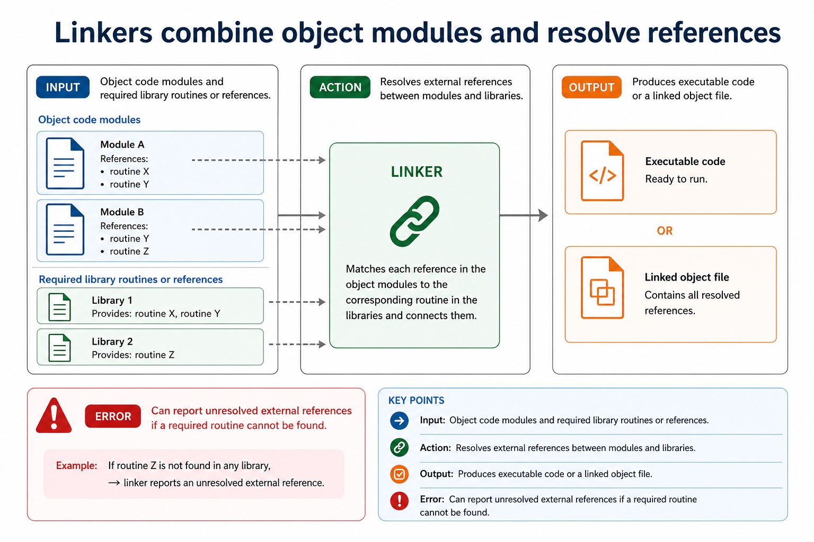
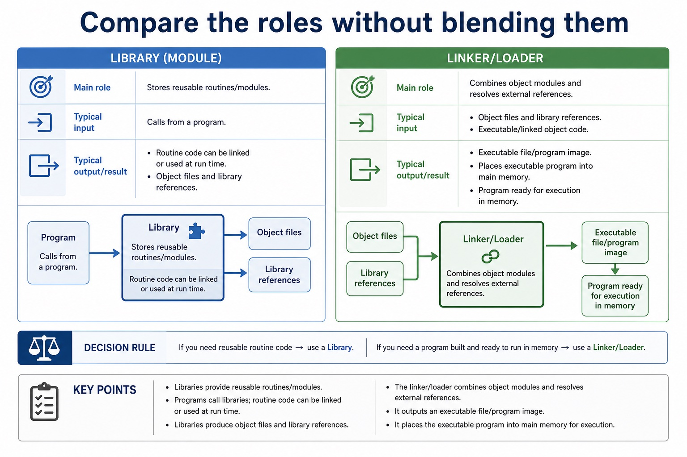

Lesson 058 | 45 minutes | Paper 1 Section 5 | System software
Object code is not always ready to run. It may still need friends, addresses and memory.
After compilation, a program may depend on other object modules and library routines.
Linkers combine the pieces. Loaders place the program into memory and prepare it for execution.
Libraries provide reusable routines so programmers do not rewrite common code from scratch.
Describethe purpose of libraries, linkers and loaders
Sequenceobject code, linking, executable code, loading and execution
Applystatic/dynamic linking ideas and common common errors
The executable does not appear by wishing politely at object code.
Why this matters
Marks often depend on separating linker and loader roles. "Makes it run" is too vague for full credit.
Common error
Do not say a library is a folder of books. It is reusable program code such as routines or modules.
Warm-up hook
Your object file calls SQRT(), but the routine is not inside your code. What helps?
Click the best answer. The computer will not invent square root because it feels mathematical today.
Choose one. External references need to be resolved before the program can run correctly.
Knowledge point 1
The post-compilation pathway connects code and prepares execution
Object codeTranslated output from compilation or assembly, not always a complete executable.External referenceA call to code or data defined in another module or library.Executable fileA program file with required code linked and arranged for execution.In memoryCode and data must be placed into main memory before the CPU can execute it.
The post-compilation pathway connects code and prepares execution
The post-compilation pathway connects code and prepares execution: source-grounded visual explanation.
Lesson fact: Object code Translated output from compilation or assembly, not always a complete executable.
Lesson fact: External reference A call to code or data defined in another module or library.
Lesson fact: Executable file A program file with required code linked and arranged for execution.
Lesson fact: In memory Code and data must be placed into main memory before the CPU can execute it.
Knowledge point 2
Libraries provide reusable routines and modules
PurposeProvide pre-written, tested routines that programs can use.ExamplesMathematical functions, input/output routines, graphics or string-handling routines.BenefitsSaves development time, reduces duplication and may improve reliability.RequirementCalls to library routines must be linked or made available at run time.
Knowledge point 3
Linkers combine object modules and resolve references
InputObject code modules and required library routines or references.ActionResolves external references between modules and libraries.OutputProduces executable code or a linked object file.ErrorCan report unresolved external references if a required routine cannot be found.
Linkers combine object modules and resolve references

Linkers combine object modules and resolve references: source-grounded visual explanation.
Lesson fact: Input Object code modules and required library routines or references.
Lesson fact: Action Resolves external references between modules and libraries.
Lesson fact: Output Produces executable code or a linked object file.
Lesson fact: Error Can report unresolved external references if a required routine cannot be found.
Knowledge point 4
Loaders place executable code into memory
InputAn executable program or loadable program image.ActionLoads code and data into main memory and prepares it to run.AddressesMay allocate memory and adjust addresses depending on where the program is loaded.BoundaryA loader does not translate source code or combine object modules.
Loaders place executable code into memory
Loaders place executable code into memory: source-grounded visual explanation.
Lesson fact: Input An executable program or loadable program image.
Lesson fact: Action Loads code and data into main memory and prepares it to run.
Lesson fact: Addresses May allocate memory and adjust addresses depending on where the program is loaded.
Lesson fact: Boundary A loader does not translate source code or combine object modules.
Knowledge point 5
Static and dynamic linking affect when library code is connected
Static linkingLibrary code is copied into the executable at link time.Static trade-offExecutable can be more self-contained but may be larger.Dynamic linkingLibrary code is linked at load time or run time from a shared library.Dynamic trade-offCan reduce duplication, but the required shared library must be available and compatible.
Static and dynamic linking affect when library code is connected
Static and dynamic linking affect when library code is connected: source-grounded visual explanation.
Lesson fact: Static linking Library code is copied into the executable at link time.
Lesson fact: Static trade-off Executable can be more self-contained but may be larger.
Lesson fact: Dynamic linking Library code is linked at load time or run time from a shared library.
Lesson fact: Dynamic trade-off Can reduce duplication, but the required shared library must be available and compatible.
Knowledge point 6
Compare the roles without blending them
Item
Main role
Typical input
Typical output/result
Library
Stores reusable routines/modules.
Calls from a program.
Routine code can be linked or used at run time.
Linker
Combines object modules and resolves external references.
Object files and library references.
Executable/linked object code.
Loader
Places executable program into main memory.
Executable file/program image.
Program ready for execution in memory.
Compare the roles without blending them

Compare the roles without blending them: source-grounded visual explanation.
Lesson fact: Main role
Lesson fact: Typical input
Lesson fact: Typical output/result
Lesson fact: Stores reusable routines/modules.
Lesson fact: Calls from a program.
Lesson fact: Routine code can be linked or used at run time.
Lesson fact: Combines object modules and resolves external references.
Lesson fact: Object files and library references.
Lesson fact: Executable/linked object code.
Lesson fact: Places executable program into main memory.
Lesson fact: Executable file/program image.
Lesson fact: Program ready for execution in memory.
Interactive tool
Post-compilation pipeline selector
Select a situation and identify whether it involves a library, linker or loader.
Worked examples
From object files to running program
Practice
Instant-check questions
Type a short answer, then check. Reveal the expected wording only after trying.
Mistake debugging
Fix the almost-right answers
Exam-style questions
Answer first, then reveal the Cambridge-style mark scheme
These are original Cambridge-style questions. The mark schemes include strict wording notes and follow-through guidance.
Summary
Post-compilation memory map
LibraryReusable routines/modules that programs can call.
LinkerCombines object code and resolves external references.
LoaderPlaces executable code into memory and prepares it to run.
StaticLibrary code copied into executable at link time.
DynamicShared library linked at load/run time.
Exam ruleUse the correct stage: compile, link, load, execute.
Homework
Clear output, not vague revision
Task 1: Role tableCreate a table for library, linker and loader: input, action, output/result, one common error.Task 2: Pipeline explanationWrite a 6-mark answer explaining how object modules and library routines become a running program.Task 3: Static vs dynamicWrite two advantages and two limitations across static and dynamic linking. Use precise wording about file size, sharing and availability.